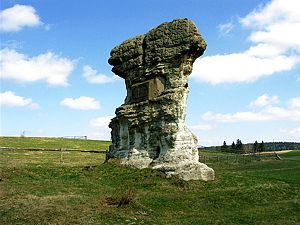
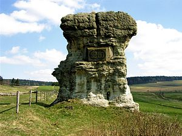
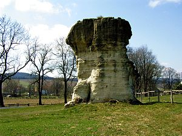
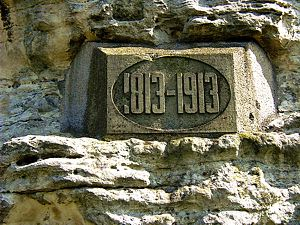
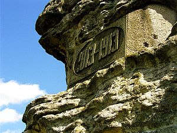
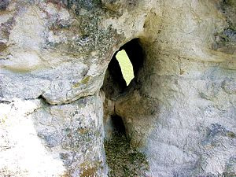

Czarcia Maczuga - kwiecień 2004
12 kwietnia 2004 roku mając chwilę czasu pojechałem do Gorzeszowa zobaczyć, jak też aktualnie wygląda Czarcia Maczuga. Skała ta znana jest też pod innymi nazwami: Diabelska Maczuga, Diabla Skała, Diabelska Skała, Diabelski Kamień, Diabelska Maczuga i przedwojenne Der Teufelsstein bądź Teufelstein.
|  | Oczywiście skała w dalszym ciągu stoi przy ulicy tak jak stała. |
|  | Trzeba przyznać, że wygląda naprawdę imponująco. |
|  | Niestety, ale to samo zjawisko które przyczyniło się do jej powstania, czyli powolna erozja, przyczynia się również do jej zniszczenia ... |
|  | Jak czytamy w Słowniku Geografii Turystycznej Sudetów tom 8: "W 1913 roku, na ścianie skałki w setną rocznicę Bitwy Narodów pod Lipskiem wykuto daty 1813 - 1913" |
|  | Specjalistą w tej dziedzinie nie jestem, ale moim zdaniem daty te zostały wykonane w innym materiale który został w skale zamontowany, jest to najprawdopodobniej płyta betonowa. Być może została ona umieszczona w tym miejscu po zwietrzeniu pierwotnych, nietrwałych napisów. |
|  | Bo erozja jest widoczna aż zanadto, w jednym miejscu skała jest dziurawa już na wylot. |

{kind=link}
{kind=link}
{kind=link}
{kind=link}
{kind=link}
{kind=link}